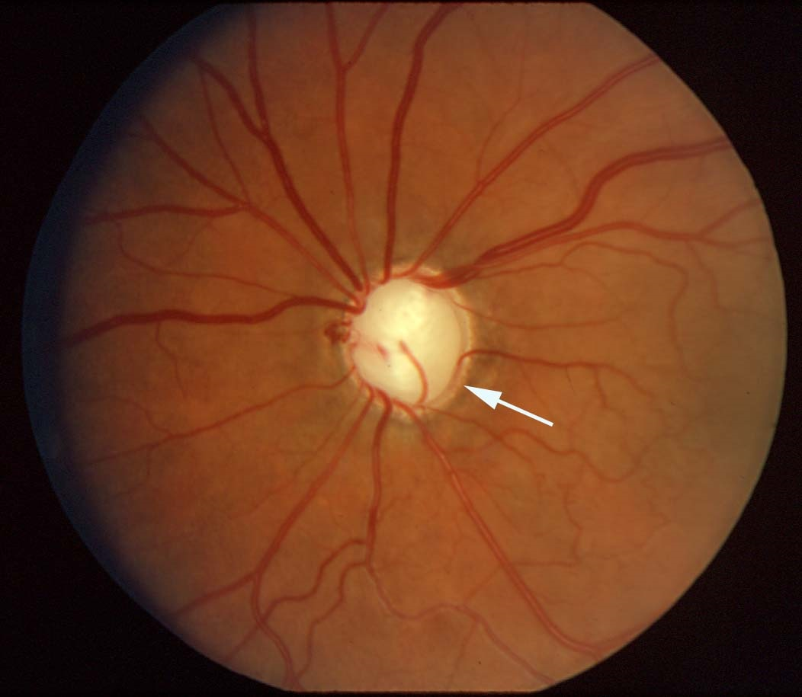
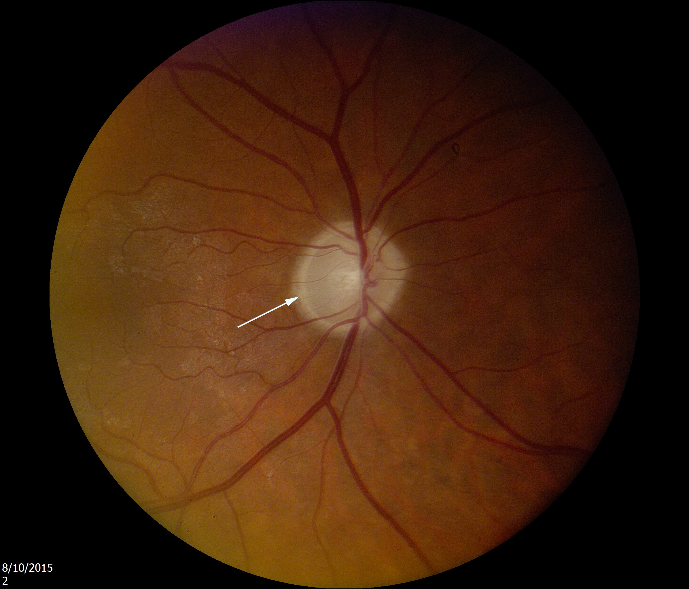
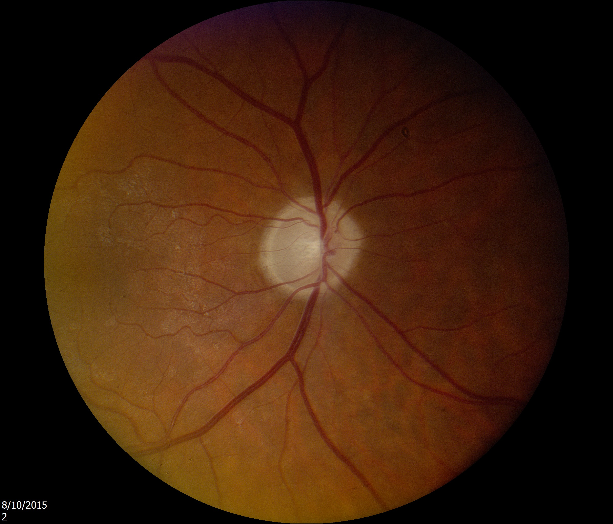

The Excavated Optic Disc

- Thinning (excavation) of optic disc neuro-retinal rim so that optic disc appears pathologically cupped
- Common causes: primary open angle glaucoma, optic disc coloboma
- Uncommon causes: arteritic ischemic optic neuropathy, compressive optic neuropathy
- Focal or diffuse thinning of neuroretinal rim tissue
-
Glaucomatous excavation
- Rim thinning occurs first inferiorly, then superiorly, then temporally and finally nasally
- Residual neuroretinal rim retains pink color
- Visual field nerve fiber bundle defects appear only when neuro-retinal rim becomes markedly thinned
 -
Non-glaucomatous excavation
- Residual neuro-retinal rim appears white
- Excavation not as deep and notching of rim not as great as in glaucoma


- Distinguish pathologic excavation of optic disc from large physiologic optic disc cup
-
Perform visual field examination
- Normal in large physiologic cupping
- Nerve fiber bundle defects in pathologic cupping, especially if advanced
- Document optic disc appearance by photography or optical coherence tomography
- Schedule serial examinations to detect increase in optic disc excavation or visual field loss

- Overlooking glaucoma may lead to avoidable blindness
-
Trap: misdiagnosis of myopic tilt or optic disc coloboma as glaucoma leads to fruitless treatment with intraocular pressure-lowering agents
-
Trap: misdiagnosis of “non-glaucomatous cupping” as glaucoma leads to delayed diagnosis of potentially vision-threatening or life-threatening optic neuropathies